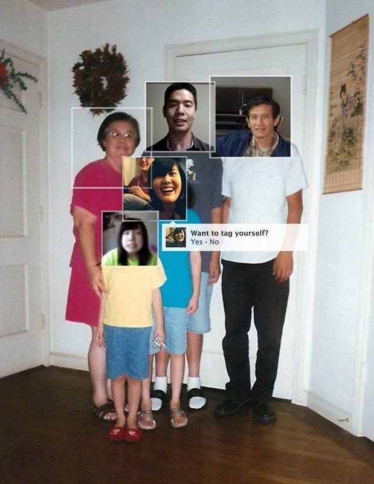

Through extremely cheap labor, the Chinese were one of the predominant demographics to lay down the tracks for trains all over the Americas. Sometimes we forget that when we look at our phones on the Caltrain back and forth from San Francisco.
When I was 17 years old, I visited Peru with my mother in 2009. There, I presented my grandmother with a slideshow of photos I took in China on my laptop. I was most excited to show her photos of her sister who she hadn't seen since she got married and moved to Peru. The next day, my grandmother thought my mother was her sister and so she wanted to take a train to the US to go visit my mother. At the time, the train in Lima, Peru had not been built yet. Hence, my mother's reaction, what train?! I'm your daughter, Cece. I'm right here.
I wonder if I was the spirit bringing her mind and memories closer to the afterlife as I showed her photos on a device that was foreign to her in her state of dementia.
The confusion of mobility and (dis)orientation between a very intimate spatial and temporal diaspora had me seek deeper into the technological means through which identities are simultaneously remembered and forgotten, especially via digital representations.
GHOST TRAINS was therefore created to actively archive these layered and contradicting semiotic memories through the technological means of the Internet.